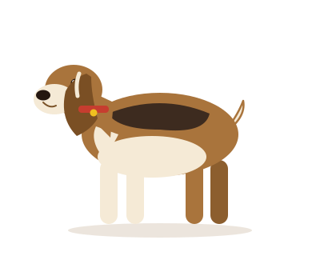

Beagle
Size: Small to medium — about 13–15 inches tall and 20–30 pounds.
Personality: Curious, friendly, and full of energy. Beagles love to follow their nose and explore.
Everyday care: Needs a daily walk and sniff-time outdoors. Brush the short coat weekly. Keep ears clean to avoid infections.
Extra everyday care tips
- Use a harness on walks — beagles pull when they catch a scent.
- A fenced yard is important; they will follow a trail if loose.
- Give puzzle toys so their busy nose stays happy indoors.